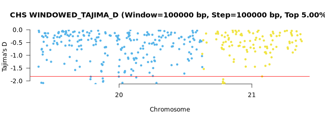
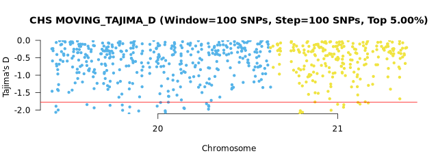
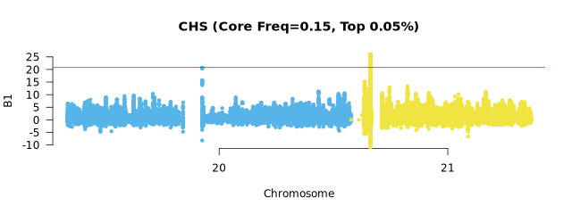
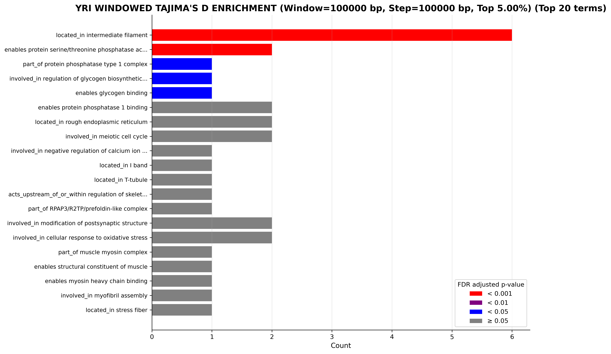

Output
Overview
selscape organizes results by analysis type and population:
results/
├── positive_selection/
│ ├── selscan/
│ │ ├── {species}/1pop/{ppl}/{method}_{maf}/ # Within-population (iHS, nSL)
│ │ └── {species}/2pop/{pair}/{method}_{maf}/ # Cross-population (XP-EHH, XP-nSL)
│ └── scikit-allel/
│ ├── {species}/1pop/{ppl}/{method}/{window}_{step}/ # Negative Tajima's D
│ └── {species}/2pop/{pair}/{method}/{window}_{step}/ # Delta Tajima's D
├── balancing_selection/
│ ├── betascan/{species}/{ppl}/m_{core_frq}/
│ └── scikit-allel/{species}/{method}/{ppl}/{window}_{step}/ # Positive Tajima's D
├── dadi/{species}/dfe/{ppl}/
│ ├── InferDM/ # Demographic models
│ ├── InferDFE/ # DFE inference
│ ├── StatDFE/ # Confidence intervals
│ └── plots/ # Fitted model visualizations
Understanding File Paths
Throughout this documentation, file paths use the following wildcards:
{species}: Species name (e.g., "Human"){ppl}: Population code (e.g., "YRI"){pair}: Population pair (e.g., "YRI_CHS"){method}: Selection statistic (e.g., "ihs", "windowed_tajima_d"){maf}: Minor allele frequency (e.g., "0.05"){cutoff}: Top proportion threshold (e.g., "0.0005"){window}_{step}: Window and step sizes{ref_genome}: Reference genome build (e.g., "hg38"){demog}: Demographic model (e.g., "two_epoch"){dfe}: DFE model (e.g., "lognormal")
Positive Selection
selscan
Within-Population Statistics (iHS, nSL)
File path:
results/positive_selection/selscan/{species}/1pop/{ppl}/{method}_{maf}/{ppl}.normalized.{method}.maf_{maf}.top_{cutoff}.outliers.scores
Example output:
SNP CHR BP normalized_nsl abs_normalized_nsl
21:35702539 21 35702539 -4.88331 4.88331
20:57138931 20 57138931 4.68161 4.68161
21:28603177 21 28603177 4.63644 4.63644
| Column | Description |
|---|---|
| SNP | SNP identifier in format chromosome:position |
| CHR | Chromosome number |
| BP | Base pair position |
| normalized_{method} | Normalized selection statistic (iHS or nSL) |
| abs_normalized_{method} | Absolute value of normalized statistic |
Positive values may indicate selection favoring the derived allele, while negative values may indicate selection favoring the ancestral allele. High absolute values may indicate recent positive selection.

Cross-Population Statistics (XP-EHH, XP-nSL)
File path:
results/positive_selection/selscan/{species}/2pop/{pair}/{method}_{maf}/{pair}.normalized.{method}.maf_{maf}.top_{cutoff}.outliers.scores
Same format as within-population statistics.
Positive values may indicate selection in the first population (e.g., YRI in YRI_CHS), while negative values may indicate selection in the second population (e.g., CHS in YRI_CHS).
More information: selscan.
scikit-allel
Windowed Tajima's D
File path:
results/positive_selection/scikit-allel/{species}/1pop/{ppl}/windowed_tajima/{window}_{step}/{ppl}.windowed_tajima..top_{cutoff}.outliers.scores
Example output:
SNP CHR BP tajima_d window_start window_end n_snps
20:61849 20 61849 -0.5400134 61849 161848 215
20:261849 20 261849 -0.2830888 261849 361848 400
| Column | Description |
|---|---|
| SNP | SNP identifier in format chromosome:position |
| CHR | Chromosome number |
| BP | Base pair position (window center) |
| tajima_d | Tajima's D statistic |
| window_start | Window start position in base pairs |
| window_end | Window end position in base pairs |
| n_snps | Number of SNPs in window |
Negative values suggest recent positive selection (selective sweeps), where beneficial alleles rapidly increased in frequency.

For all Tajima's D methods, each data point in the Manhattan plot represents the starting position (window_start) of a window.
Moving Tajima's D
File path:
results/positive_selection/scikit-allel/{species}/1pop/{ppl}/moving_tajima_d/{window}_{step}/{ppl}.moving_tajima_d.top_{cutoff}.outliers.scores
Similar format to windowed approach, but windows are defined by SNP counts rather than base pairs.
| Column | Description |
|---|---|
| SNP | SNP identifier in format chromosome:position |
| CHR | Chromosome number |
| BP | Base pair position (window center) |
| tajima_d | Tajima's D statistic |
| window_start | Window start position in base pairs |
| window_end | Window end position in base pairs |
| n_snps | Number of SNPs in window (constant) |

Delta Tajima's D (Cross-Population)
File path:
results/positive_selection/scikit-allel/{species}/2pop/{pair}/delta_moving_tajima_d/{window}_{step}/{pair}.delta_moving_tajima_d.top_{cutoff}.outliers.scores
Example output:
SNP CHR BP delta_tajima_d window_start window_end n_snps abs_delta_tajima_d
21:26659162 21 26659162 3.41144 26659162 26674022 100 3.41144
21:21456001 21 21456001 3.17360 21456001 21473170 100 3.17360
21:27242333 21 27242333 -3.07313 27242333 27258823 100 3.07313
| Column | Description |
|---|---|
| SNP | SNP identifier in format chromosome:position |
| CHR | Chromosome number |
| BP | Base pair position (window center) |
| delta_tajima_d | Difference in Tajima's D between populations |
| window_start | Window start position in base pairs |
| window_end | Window end position in base pairs |
| n_snps | Number of SNPs in window |
| abs_delta_tajima_d | Absolute value of delta Tajima's D |

Large positive or negative values indicate selection acting differently between populations.
More information: scikit-allel.
Balancing Selection
BetaScan
File path:
results/balancing_selection/betascan/{species}/{ppl}/m_{core_frq}/{ppl}.{ref_genome}.m_{core_frq}.b1.top_{cutoff}.outliers.scores
Example output:
SNP CHR BP B1
20:1914695 20 1914695 41.939494
20:1914712 20 1914712 41.479453
20:1914729 20 1914729 40.555049
| Column | Description |
|---|---|
| SNP | SNP identifier in format chromosome:position |
| CHR | Chromosome number |
| BP | Base pair position |
| B1 | Beta1 statistic for balancing selection |
Higher B1 values indicate stronger evidence for long-term balancing selection, where multiple alleles are maintained over extended periods.

More information: BetaScan.
scikit-allel
Windowed Tajima's D
File path:
results/balancing_selection/scikit-allel/{species}/windowed_tajima_d/{ppl}/{window}_{step}/{ppl}.windowed_tajima_d.top_{cutoff}.outliers.scores
Example output:
SNP CHR BP tajima_d window_start window_end n_snps
20:61849 20 61849 -0.5400134 61849 161848 215
20:261849 20 261849 -0.2830888 261849 361848 400
| Column | Description |
|---|---|
| SNP | SNP identifier in format chromosome:position |
| CHR | Chromosome number |
| BP | Base pair position (window center) |
| tajima_d | Tajima's D statistic |
| window_start | Window start position in base pairs |
| window_end | Window end position in base pairs |
| n_snps | Number of SNPs in window |
Positive values indicate balancing selection, where multiple alleles are maintained in the population.
Moving Tajima's D
File path:
results/balancing_selection/scikit-allel/{species}/moving_tajima_d/{window}_{step}/{ppl}.moving_tajima_d.top_{cutoff}.outliers.scores
Similar format to windowed approach, but windows are defined by SNP counts rather than base pairs.
| Column | Description |
|---|---|
| SNP | SNP identifier in format chromosome:position |
| CHR | Chromosome number |
| BP | Base pair position (window center) |
| tajima_d | Tajima's D statistic |
| window_start | Window start position in base pairs |
| window_end | Window end position in base pairs |
| n_snps | Number of SNPs in window (constant) |
Distribution of Fitness Effects
dadi/dadi-cli
Demographic Model Inference
File path: results/dadi/{species}/dfe/{ppl}/InferDM/{ppl}.{ref_genome}.{demog}.InferDM.bestfits
Example output:
# Log(likelihood) nu T misid theta
-29.738235902874877 3.2402258068957983 0.13580062396208237 0.0010470465761291449 321.237660524018
-29.73823629293304 3.2417998728753408 0.13578140459967458 0.0010576355371547388 321.23238379628344
-29.73823658527745 3.237659010918116 0.13591524984020853 0.0010605026099018222 321.22253191565875
| Column | Description |
|---|---|
| Log(likelihood) | Log-likelihood of the model fit (higher is better) |
| nu | Ratio of current population size to ancestral population size |
| T | Time since population size change, measured in 2Ne generations |
| misid | Proportion of misidentified ancestral states |
| theta | Population-scaled mutation rate (4Neμ) |
Demographic Model Fit
File path: results/dadi/{species}/dfe/{ppl}/plots/{ppl}.{ref_genome}.{demog}.fitted.png

The visualization shows the observed frequency spectrum (data) compared to the model-predicted spectrum.
Distribution of Fitness Effects
File path: results/dadi/{species}/dfe/{ppl}/InferDFE/{ppl}.{ref_genome}.{demog}.{dfe}.InferDFE.bestfits
Example output:
# Log(likelihood) log_mu log_sigma misid theta
-28.737041385073574 2.5282728150148785 4.591179583286655 0.039371652920637594 742.0589958104816
-28.73804138508753 2.5282735377291865 4.591183662610013 0.0393715391668421 742.0589958104816
-28.737041388380618 2.5283038170363823 4.5912804442420105 0.039370931031321235 742.0589958104816
| Column | Description |
|---|---|
| Log(likelihood) | Log-likelihood of the DFE model fit (higher is better) |
| log_mu | Mean of log-normal distribution of selection coefficients |
| log_sigma | Standard deviation of log-normal distribution of selection coefficients |
| misid | Proportion of misidentified ancestral states |
| theta | Population-scaled mutation rate (4Neμ) |
DFE Model Fit Plot
File path: results/dadi/{species}/dfe/{ppl}/plots/{ppl}.{ref_genome}.{demog}.{dfe}.fitted.png
 The visualization shows the observed vs. model-predicted frequency spectrum for nonsynonymous mutations.
The visualization shows the observed vs. model-predicted frequency spectrum for nonsynonymous mutations.
Mutation Proportion Plot
File path: results/dadi/{species}/dfe/{ppl}/plots/{ppl}.{ref_genome}.{demog}.{dfe}.fitted.mut.prop.png

The mutation proportion plot shows the distribution of mutations by selection strength (2N|s|): nearly neutral mutations (< 1), weakly deleterious mutations (1–10), moderately deleterious mutations (10–100), and strongly deleterious mutations (> 100).
Confidence Intervals
File path: results/dadi/{species}/dfe/{ppl}/StatDFE/{ppl}.{ref_genome}.{demog}.{dfe}.godambe.ci
Example output:
Estimated 95% uncerts (theta adj), with step size 0.1): [2.45625971 3.17513531 0.11405905]
Lower bounds of 95% confidence interval : [-0.65471712 -0.74208004 -0.0046111 ]
Upper bounds of 95% confidence interval : [4.2578023 5.60819059 0.22350701]
Estimated 95% uncerts (theta adj), with step size 0.01): [2.19800876 2.55236006 0.10687941]
Lower bounds of 95% confidence interval : [-0.39646617 -0.11930478 0.00256854]
Upper bounds of 95% confidence interval : [3.99955135 4.98541534 0.21632737]
Estimated 95% uncerts (theta adj), with step size 0.001): [2.19575422 2.54701563 0.10682199]
Lower bounds of 95% confidence interval : [-0.39421163 -0.11396035 0.00262596]
Upper bounds of 95% confidence interval : [3.99729681 4.98007091 0.21626994]
Godambe-based 95% confidence intervals for all DFE parameters.
More information: dadi and dadi-cli.
Functional Annotation
Gene and functional annotation of outliers:
ANNOVAR Annotated Outliers
All outliers are annotated with gene information:
File path: {analysis_path}/{file_prefix}.annotated.outliers
Example output:
Chr Start End Ref Alt Func.refGene Gene.refGene ExonicFunc.refGene AAChange.refGene
20 14150039 14150039 C A intronic MACROD2 . .
20 17148100 17148100 C A intergenic OTOR;PCSK2 . .
20 23595497 23595497 G A intergenic CST9L;CST9 . .
| Column | Description |
|---|---|
| Chr | Chromosome number |
| Start | Variant start position in base pairs |
| End | Variant end position in base pairs |
| Ref | Reference allele |
| Alt | Alternative allele |
| Func.refGene | Functional region (exonic, intronic, intergenic, UTR, etc.) |
| Gene.refGene | Gene symbol(s) |
| ExonicFunc.refGene | Exonic function (synonymous, nonsynonymous, stopgain, stoploss, etc.) |
| AAChange.refGene | Amino acid change for coding variants |
Outlier Gene Lists
File path: {analysis_path}/{file_prefix}.outlier.genes
Example output:
Gene
HLCS
MACROD2
PCSK2
UQCC1
Simple list of unique genes extracted from annotated outliers.
More information: ANNOVAR.
GO Enrichment Analysis
Statistical testing for GO enrichment in outlier genes:
Gowinda Enrichment Results
File path: {analysis_path}/{file_prefix}.gowinda.enrichment.tsv
Example output:
GO_ID avg_genes_sim genes_found p_value p_adjusted genes_uniq genes_max genes_total description gene_list
GO:0034551 0.008 1 0.0082240000 1.0000000000 1 1 14 mitochondrial complex III uqcc1
GO:0031410 0.270 2 0.0247750000 1.0000000000 2 37 1017 cytoplasmic vesicle uqcc1,pcsk2
GO:0004077 0.030 1 0.0297130000 1.0000000000 1 1 1 biotin ligase activity hlcs
| Column | Description |
|---|---|
| GO_ID | Gene Ontology term identifier |
| avg_genes_sim | Average number of genes in simulations |
| genes_found | Number of outlier genes found in this GO term |
| p_value | Uncorrected p-value from simulation |
| p_adjusted | FDR-corrected p-value |
| genes_uniq | Number of unique genes in this GO term |
| genes_max | Maximum possible genes for this term |
| genes_total | Total genes in background set |
| description | GO term description |
| gene_list | Comma-separated list of outlier genes |
Enrichment Visualization
File path: {analysis_path}/{file_prefix}.gowinda.enrichment.png

The enrichment plot shows top 20 GO terms, sorted by their significance (FDR adjusted p-value) and then by the number of genes found. Bars are colored based on significance: red for highly significant enrichment (< 0.001), purple for significant enrichment (< 0.01), blue for moderately significant enrichment (< 0.05), and gray for non-significant results (≥ 0.05).
More information: Gowinda Tutorial.
Interactive HTML Reports
All methods generate interactive HTML tables with search, sort, and export functionality:
- Gene lists:
{analysis_path}/{file_prefix}.outlier.genes.html - Enrichment results:
{analysis_path}/{file_prefix}.gowinda.enrichment.html -
Best-fit parameters:
-
results/dadi/{species}/dfe/{ppl}/html/{ppl}.{ref_genome}.{demog}.InferDM.top10.bestfits.html results/dadi/{species}/dfe/{ppl}/html/{ppl}.{ref_genome}.{demog}.{dfe}.InferDFE.top10.bestfits.htmlresults/dadi/{species}/dfe/{ppl}/html/{ppl}.{ref_genome}.{demog}.{dfe}.godambe.ci.html